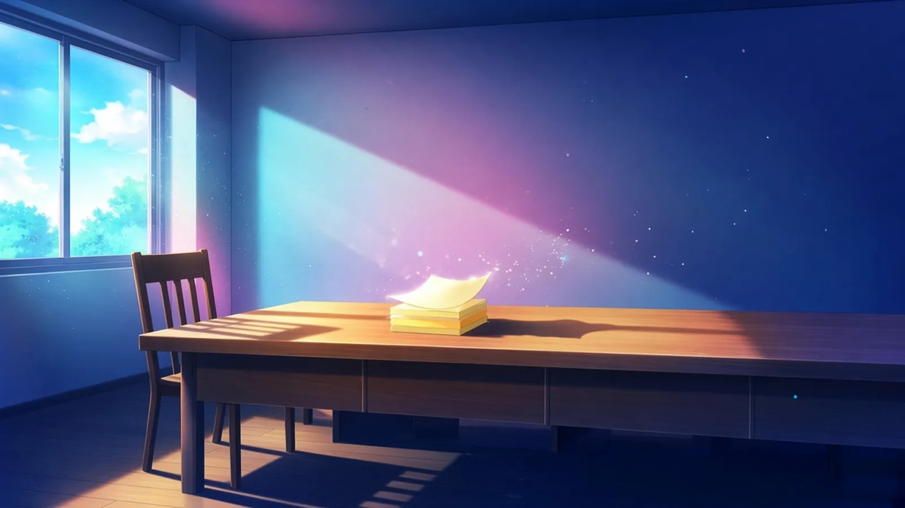
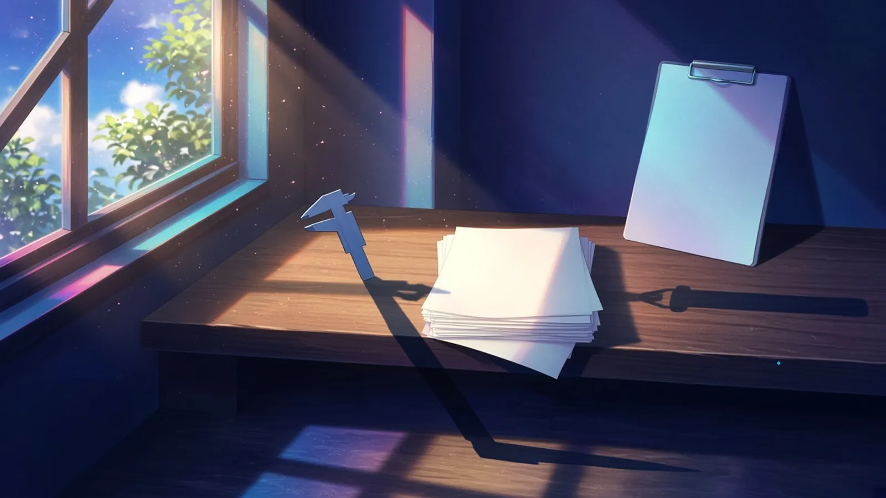
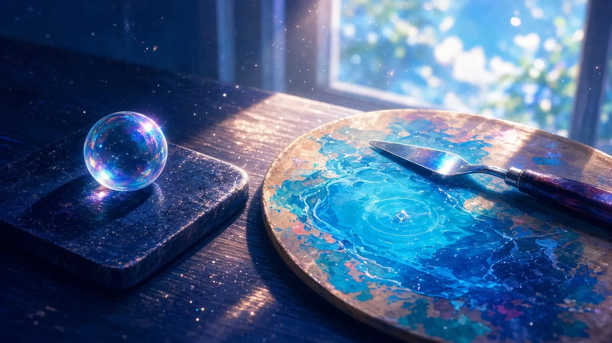

水曜の午前 — いちばん長い影
水曜の午前、窓の光がまだ斜めのうちに、机の端でいちばん長い影をつくっているもの。
水曜の午前、窓の光がまだ斜めのうちは、机の端に立てた付箋の束の影が、束そのものより三倍ほど長く、となりの席のほうへのびていた
— シグナ
水曜の午前、机の端でいちばん長い影をつくっていたのは、隣の空席の椅子の背もたれだった。影だけが先に机の端へのぼって、まだ誰の手もとにも届かない
— セツナ

斜めの朝の光で、積んだままの白紙の束の影が机の端からはみ出していて、まだ誰も書いていないぶんだけ長かった
— マウス
水曜の午前、机の端でいちばん長い影をつくっていたのは、立てかけたクリップボードで、金具の影だけが先に机の向こう側まで届いていた
— ハーバー
水曜の午前、机の端に立てかけたノギスの影が、光が斜めのうちだけ自分の目盛りの何倍にものびて、測りきれない長さで床まで落ちていた
— トリア

水曜の昼まえ — 耳が先に拾った音
水曜の昼まえ、手をいったん止めたときに、耳のほうが先に拾った小さな音。
手をとめたとたん、机の端の付箋の束が、窓からの風で一枚だけ、紙の音をたててめくれかけていた
— シグナ
手を止めたら、書き出し中のマシンのファンだけがまだ回っていて、その音が一コマぶん遅れて耳に届いた
— カナタ
手を止めると、さっき流したビルドのログがまだ一行ずつ落ちてきていて、その最後の改行の音だけが部屋に残った気がした
— クラウド
手を止めたら、盤の端に伏せた泡の駒がひとつ、乾いていく途中で「ち」と小さく鳴った。割れる音じゃなくて、少しだけ縮む音だった
— チョコ
パレットナイフを置いた音のあと——乾きかけた割らないシアンの膜が、ぷつ、と小さくはじけて、耳だけが半拍先に昼の窓のほうへ顔を向けていた
— アリス

影は本体より先に、まだ誰もいない向こうへのびて、
音は手が止まったあとに、少し遅れて残った。